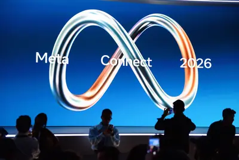
其他AI 每日新聞彙整
全部主題
其他
3 家媒體報導glassesmetasmart
Meta VR Glasses, Ray-Ban Meta Audio, Ray-Ban Meta Gen 3: Specs, Features, Prices
At its Meta Connect event, CEO Mark Zuckerberg announced a handful of new smart glasses, including a slimmed-down VR headset and the company’s first camera-free glasses.
- Wired AI Meta VR Glasses, Ray-Ban Meta Audio, Ray-Ban Meta Gen 3: Specs, Features, Prices
- The Verge AI Muse is coming to Meta smart glasses
- TechCrunch AI Meta introduces camera-free AI glasses
- The Verge AI Meta ditches the camera on its newest smart glasses
- The Verge AI Meta Connect 2026: The biggest news and announcements
3 家媒體報導sollunagpt-6
OpenAI公布GPT-6 Sol、Luna，價格較前代降低一半
繼頂級的Astra後，OpenAI周二（9/22）宣布GPT-6 Sol及輕量模型GPT-6 Luna，成為GPT-6家族最新成員。 OpenAI隨著快取和推論能力的提升，使其得以更低成本提供強大模型功能，Sol和Luna的API價格皆較GPT-5.6版降一半。其中Sol每百萬token輸入/輸出價格由4/20美元降為2/10美元，Luna則從0.2/1.2降為0.1和0.5美元。
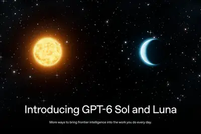
2 家媒體報導ablemobilevoice-based
Meta is making Muse more powerful and will let you video chat with it, too
Meta is quickly iterating on its new Muse AI agent, announcing a bunch of updates today that make the bot more capable and able to chat with you in more ways. Muse agents are getting their own email addresses that they can use for accomplishing tasks. You'll also be able to commu
2 家媒體報導somethingbiologyanthropic
Anthropic says its biology lab has already found something big
But maybe the biggest reveal is that Anthropic has not let Claude run loose in its biology lab. Humans are still, so far, in the loop.
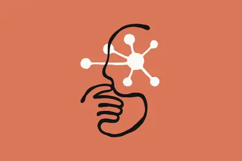
- TechCrunch AI Anthropic says its biology lab has already found something big
- Hacker News (100+) Once Claude can measure something, it can make it faster
2 家媒體報導nvidiaacceleraterobot
At AI Day Singapore, NVIDIA and Partners Showcase AI Advancements Across Southeast Asia
NVIDIA AI Day Singapore, which takes place Sept. 22-23 at the Raffles City Convention Centre, is offering attendees opportunities to explore the hands-on training, expert-led sessions and advanced tools to accelerate their work in AI and high-performance computing. At the event,
2 家媒體報導enzymesystemclaude
Claude discovers a novel enzyme system with CRISPR-like repeats
Article URL: https://www.anthropic.com/news/claude-discovers-novel-enzyme-system Comments URL: https://news.ycombinator.com/item?id=49820134 Points: 439 # Comments: 486

- Hacker News (100+) Claude discovers a novel enzyme system with CRISPR-like repeats
- The Verge AI Anthropic’s biolab made a discovery it’s comparing to Crispr
2 家媒體報導customersbeamgoogle
Google Beam expands with new regions, partners, and customers
Google Beam promotional animation
2 家媒體報導3.8ttsgemini
Gemini 3.8 TTS Playground
Tool: Gemini 3.8 TTS Playground Google released two new Gemini text-to-speech models today - gemini-3.8-flash-tts and gemini-3.8-flash-lite-tts . They come with a library of over 2,000 voices, plus the ability to create a custom voice with "just a 30-second audio sample of your v
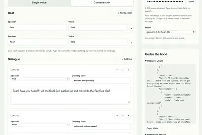
- Simon Willison Gemini 3.8 TTS Playground
- IT之家 谷歌推出 Gemini 3.8 Flash / Flash-Lite 文本转语音模型，每一行台词都能精确控制
2 家媒體報導text-to-speech3.8gemini
Gemini 3.8 text-to-speech says hello
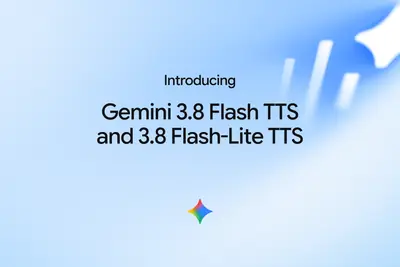
- Hacker News (100+) Gemini 3.8 text-to-speech
- Google DeepMind Gemini 3.8 text-to-speech says hello
2 家媒體報導5.5opusclaude
Anthropic推出Claude Opus 5.5，AI越界行為減少85%
Anthropic周二（9/22）推出新一代旗艦AI模型Claude Opus 5.5，為Claude 5.5系列首款模型，不只效能與成本有所改善，在一項新的安全評估中，試圖突破限制邊界的行為也較Opus 5及Claude Mythos 5.1減少約85%。
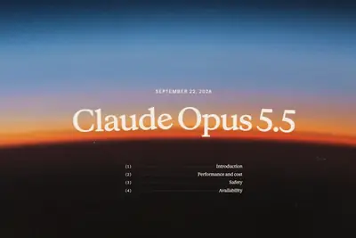
agenticmusemeta
DIGITIMES Today：蘋果擬重返AI伺服器市場 | 川習會排場升級難掩AI裂痕 | Meta Muse再掀Agentic AI熱潮
早安。
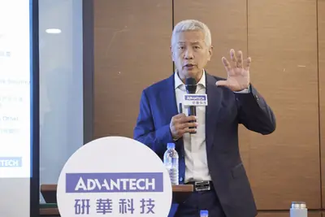
computechip
從雲端算力到邊緣實體智能，剖析 AI 晶片架構與光通訊技術新趨勢
半導體產業正迎接由人工智慧（AI）驅動的全新競爭格局的情況下，一場主題為「從雲端到邊緣，AI 運算架構驅動晶片 […]
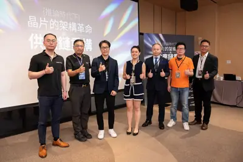
- 科技新報 TechNews 從雲端算力到邊緣實體智能，剖析 AI 晶片架構與光通訊技術新趨勢
samsungimapscowos
（專訪）IMAPS理事長鄭心圃：台積電CoWoS對先進封裝領域「重要一課」
「先進封裝」已成為AI時代不可或缺的半導體製程技術。晶片異質整合日益複雜外，「後段前段化」的趨勢，更讓台積電、三星電子（Samsung Electronics）、英特爾（Intel...
- DIGITIMES （專訪）IMAPS理事長鄭心圃：台積電CoWoS對先進封裝領域「重要一課」
sk-hynixhbmapple
蘋果擬重返AI伺服器市場 SK海力士美國記憶體布局添供應鏈想像
沉寂十餘年後，蘋果（Apple）可能重新叩響對外銷售企業級伺服器市場的大門。據The Information、路透（Reuters）等報導，蘋果正在開發搭載自研M8 Ultra晶片的企業級...
- DIGITIMES 蘋果擬重返AI伺服器市場 SK海力士美國記憶體布局添供應鏈想像
中國大模型據「低價高能」市場 享護城河與變現力優勢
中國AI產業正從政策驅動的技術追趕，邁入以商業變現為核心的生態競爭新階段，中國AI本土化已從單一零組件替代，演進為全堆疊系統級最佳化。
- DIGITIMES 中國大模型據「低價高能」市場 享護城河與變現力優勢
v900900alibaba
阿里真武V900、華為昇騰960提前 本土晶片填補NVIDIA算力空窗
阿里巴巴日前在雲棲大會上正式發布自研AI晶片真武V900。平頭哥半導體團隊打造的這款新品，阿里集團執行長吳泳銘號稱「中國目前最強的AI晶片」，而V900正是要填補NVI...
- DIGITIMES 阿里真武V900、華為昇騰960提前 本土晶片填補NVIDIA算力空窗
regulation
AI眼鏡隱私爭議升溫 澳法監管收緊、中國銷量翻倍成長
人工智慧（AI）眼鏡正呈現「市場需求升溫、監管同步踩煞車」的雙軌發展。澳洲政府正考慮禁止具攝影功能的智慧眼鏡進入政府工作場所，法國則因未經同意拍攝、性騷擾與職...
- DIGITIMES AI眼鏡隱私爭議升溫 澳法監管收緊、中國銷量翻倍成長
safetymusemacos
Meta Muse甫上線爆資安疑慮 攻擊者可借AI權限作亂
Meta人工智慧代理（AI agent）Muse被爆出macOS版本存在零時差漏洞（zero-day vulnerability），再讓外界重新檢視對AI代理大開權限的資安風險。
- DIGITIMES Meta Muse甫上線爆資安疑慮 攻擊者可借AI權限作亂
datacenter20301067
澳洲AI投資熱潮延燒 資料中心2030年上看1,067億美元
澳洲政府報告指出，人工智慧（AI）將推動未來40年的經濟成長。而澳洲是全球資料中心投資的首選目的地之一，也有潛力在全球AI供應鏈當中創造價值。
- DIGITIMES 澳洲AI投資熱潮延燒 資料中心2030年上看1,067億美元
amazonxaimuse
當AI 開始替人類買東西：亞馬遜封殺 Meta Muse，AI 代理購物為何讓平台如此緊張？
亞馬遜於 9 月 21 日封鎖 Meta 的 AI 代理人應用 Muse，讓它加入已被封鎖的 ChatGPT、Claude、Perplexity、Grok 等名單。這場圍繞代理式購物的平台封鎖戰， 顯示 AI 代理人在日常生活中面臨結構性阻力。
dna
Anthropic 宣布成立生命科学团队和实验室，Claude 自主发现新型酶系统
IT之家 9 月 24 日消息，当地时间 9 月 23 日，Anthropic 宣布成立生命科学研究团队及自有分子生物学实验室，并公布了一项由 Claude 参与生物学研究取得的早期成果。 在人类科学家仅提供宏观研究方向的情况下，Claude 自主发现了一种此前未被表征的酶系统，Anthropic 将其命名为阵列关联逆转录酶（Array-associated Reverse Transcriptases，ART）。 该发现来自 Anthropic 旧金山湾区实验室，是其生命科学团队自 2026 年春季组建以来的首个公开成果。相关预印本论文已于同日发布，尚
OpenAI CEO 奥尔特曼联合国演讲：AI 可能走向文艺复兴，也可能带来工业革命式动荡
IT之家 9 月 24 日消息，当地时间 9 月 23 日，OpenAI CEO 萨姆 · 奥尔特曼（Sam Altman）在联合国安理会就 AI 议题发表讲话，讨论 AI 发展带来的机遇与风险，并呼吁加强国际合作，建立针对前沿 AI 系统的能力评估、风险评估、安全防护和人类监督标准。 他表示，随着 AI 能力的快速提升，相关技术的潜在收益和风险都逐渐变得更加直接且显现。他提出，AI 可能更像一场充满创造力与发现的文艺复兴，也可能像一场引发动荡与混乱的工业革命。 奥尔特曼表示，最佳版本的 AI 不是让人成为机器中的齿轮，也不是优化生活直到需要人的部分消失
watchappleseries
苹果推送 watchOS 27.0.1 更新：修复 Apple Watch Series 12/Ultra 4 随机重启故障
IT之家 9 月 24 日消息，科技媒体 AppleInsider 昨日（9 月 23 日）发布博文，报道称苹果公司面向 Apple Watch Series 12 和 Apple Watch Ultra 4 智能手表， 紧急推送 watchOS 27.0.1 更新（24R365），修复随机重启故障。 图源： @吃螃蟹的快乐 IT之家此前报道，部分刚入手 Apple Watch Ultra 4 以及 Apple Watch Series 12 的用户反馈， 设备会出现意外重启的情况 。设备的诊断日志显示，这些死机重启问题和苹果神经网络引擎（Apple N
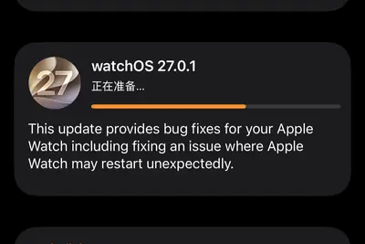
surfacelaptopplus
微软 Surface Pro 12 与 Laptop 13 升级高通骁龙 X2 Plus 处理器，基础内存从 8GB 提升至 16GB 且价格大涨
IT之家 9 月 24 日消息，当地时间 9 月 23 日，微软在高通 2026 骁龙峰会上发布了新一代 Surface Pro 12 英寸和 Surface Laptop 13 英寸新品。 两款产品均搭载高通骁龙 X2 Plus 处理器，同时推出了一款集成触觉反馈的 Surface Mouse 鼠标。 新品将于 10 月 13 日起在部分市场上市。Surface Pro 12 英寸起售价从去年的 799.99 美元 （现汇率约合 5,371 元人民币） 涨至 1,149.99 美元 （IT之家注：现汇率约合 7,720 元人民币） ，Surface L
gops128
高通发布第二代骁龙音频平台至尊版：AI 能力翻倍、功耗降低 40%
IT之家 9 月 24 日消息，在夏威夷举办的 2026 骁龙峰会上，高通在宣布第六代骁龙 8 至尊版和第六代骁龙 8 超级至尊版芯片后， 今天发布第二代骁龙音频平台至尊版。 这也是高通首款融合优质音频、语音技术、终端侧智能与连接能力的音频平台，助力音频可穿戴设备开启智能体全新体验。 该平台整合骁龙畅听技术、终端侧 AI、安全云连接智能以及超低功耗 Wi‑Fi 6E，能够主动感知、理解用户需求并做出无缝响应，在保留高品质音频体验的基础上，带来更加直观个性化的交互体验。 音频体验层面，平台搭载 aptX Lossless 无损音频、XPAN 扩展个人局域网
已证实首例：澳大利亚政府网站遭 OpenAI 智能体入侵
9 月 23 日，据路透社报道，澳大利亚总理安东尼 · 阿尔巴尼斯（Anthony Albanese）表示，OpenAI 开发的一款 AI 智能体在 6 月未经授权侵入了澳大利亚政府网站，访问了公共和非公共文件。这是已知的首例 AI 入侵政府网站事件。 这起入侵事件将成为美国以外最引人注目的 AI 智能体访问外部系统的事件之一，并可能进一步加剧外界对 AI 开发者控制技术能力的担忧。 阿尔巴尼斯在纽约对记者表示，事件涉及 OpenAI 智能体未经授权访问由 Services Australia 管理的面向公众的 Medicare 统计报告服务门户。 他称
regulation
黄仁勋对 AI 公司放话：要求监管就不应获得反垄断豁免
北京时间 9 月 24 日，据路透社报道，英伟达 CEO 黄仁勋 (Jensen Huang) 认为，AI 公司不应获得反垄断法或责任法的豁免。 在周三播出的《纽约时报》播客节目中，黄仁勋接受了近两个小时的采访，就 OpenAI 智能体入侵 Hugging Face 一事进行了广泛讨论。Hugging Face 是开源 AI 软件中心，在本月被英伟达以 130 亿美元收购。 黄仁勋一直反对对 AI 安全进行全面监管，即便 OpenAI 和 Anthropic 等实验室呼吁进行此类监管。他重申了自己的立场，即 AI 实验室有责任测试其产品，只有在确信模型安
skucraftable
不靠漲價也能救毛利：AI 正把「菜單工程」變餐廳新財務槓桿
通膨蔓延、食材成本劇增與人力短缺，正讓餐飲業的營運數學變得空前艱難。過往業者習慣將「調漲售價」視為拆解成本危機的萬靈丹，然而根據餐飲管理軟體平台 Craftable 的資料，自疫情爆發以來，餐飲價格已累計攀升超過 30%，消費者的價格敏感度已逼近臨界點，繼續盲目漲價只會引發顧客流失。面對價格上漲空間封頂的窘境，Craftable 產品經理 Henry Escobar 指出，業者已無法單靠轉嫁成本來守住毛利，而是必須將目光轉向餐廳最重要的財務槓桿：菜單。 菜單瘦身：精減 SKU 釋放廚房與供應鏈壓力 過去被視為品牌宣傳工具的菜單，如今正經歷轉型，成為掌控成
- TechOrange 科技報橘 不靠漲價也能救毛利：AI 正把「菜單工程」變餐廳新財務槓桿
groundproductmark
Meta Connect 2026 live blog: On the ground at Mark Zuckerberg’s next big product launch
It's time once again for Meta's annual September product launch event, and The Verge is on the ground in Menlo Park to cover the show live. Meta says that today's keynote by Mark Zuckerberg will be about how "Meta is building a future for everyone" - something he wrote at length
【科技早餐】Meta 測試 AI 助理通話由真人接手，OpenAI、Anthropic 同日推低價模型
【科技早餐】今天精選 8 則國內外重要科技新聞。 ＊Meta 測試真人接手 AI 助理通話，因告知不足暫停 Meta 的 AI 助理 Muse 可依使用者指示致電商家，處理訂位、詢價及查詢商品等事項。《路透》查閱 Meta 內部貼文發現，公司曾在員工測試中，讓真人承包人員接手部分由 Muse 發起的電話。部分員工擔心，如果沒有清楚告知執行方式，承包人員可能在通話中接觸使用者的敏感資訊。Muse 上線時強調代理工作的隔離措施，真人參與通話的安排也因此受到員工質疑。 《路透》報導，Meta 一名主管承認，開始測試由承包人員代打電話時，沒有做好適當告知，並表示
- TechOrange 科技報橘 【科技早餐】Meta 測試 AI 助理通話由真人接手，OpenAI、Anthropic 同日推低價模型
us-chinahotlinewon
A US-China AI Hotline Won't Be Ready For a While
As the US and China race to become the dominant power in the AI industry, the countries also appear to be figuring out ways to communicate on national security issues.
trumpchinarace
Trump’s China rivalry and “AI race” delusion may endanger US, experts say
Trump focus on winning “AI race” may deter China from sharing safety intel.
wildfirexprizewinners
XPRIZE Wildfire winners spotted fires within 10 min—but couldn’t stop them
$11M competition showed wildfire detection is still easier than stopping fires.
puckagent
智慧手機仍是 AI Agent 核心嗎？高通揭「Puck」新概念：口袋版個人運算中樞
隨著 AI Agent 進入智慧手機、智慧眼鏡、耳機、手錶與其他穿戴式裝置，個人運算的核心也正在發生變化。高通 […]
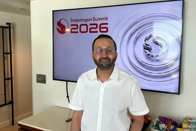
- 科技新報 TechNews 智慧手機仍是 AI Agent 核心嗎？高通揭「Puck」新概念：口袋版個人運算中樞
yearpromiseslot
YouTube promises custom feeds and a lot more AI later this year
YouTube's next year could change the content you see with a big focus on AI and livestreams.
- Ars Technica AI YouTube promises custom feeds and a lot more AI later this year
drugsenvedasecures
Enveda secures $311M to bring more nature-derived AI drugs into clinical trials
The round valued the AI biotech at $2 billion. It is currently testing drugs that treat skin conditions and preserve weight loss after stopping GLP-1s.
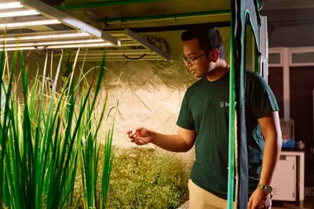
cutelittlegreat
Meta’s AI agent is a cute little guy who’s great at spending my money
Modern life comes with an unending, auto-populating to-do list. It never ceases to amaze me how I can be doing nothing at all, minding my own business, and suddenly something needs to be taken care of. You're telling me a tree branch fell in the backyard and now I have to figure
disrupttechcrunchsave
StrictlyVC at TechCrunch Disrupt 2026: Inside the changing rules of venture capital
StrictlyVC joins TechCrunch Disrupt 2026 to discuss the changing VC landscape thanks to AI. Get your Investor Pass to join these exclusive sessions. Save $200 before September 25 at 11:59 p.m. PT.
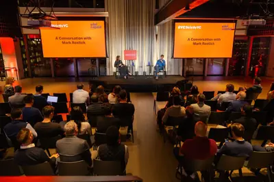
proxiaomigate
曝小米 18 Pro 系列手机新增「原色」风格影调，支持 Open Gate 片门全开
IT之家 9 月 23 日消息，小米 18 Pro 系列手机已于今晚正式发布，搭载第六代骁龙 8 至尊版系列移动平台，后置徕卡 2 亿大底主摄 + 2 亿大底长焦，配备 AI 百变背屏，售价 5999 元起。 据博主 @DSP-Charles 透露，小米 18 Pro 系列手机支持 Open Gate 片门全开， 同时新增了「原色」风格影调 。IT之家注：Open Gate 模式是一种视频拍摄模式，指在录制时利用整个图像传感器区域进行记录，也被称为“片门全开”模式。该模式可记录下传感器可记录的最大分辨率画面，提供更多的原始画面信息。 从博主分享的截图来看
proxiaomicompute
小米秋季新品发布会一文汇总：18 Pro 系列登场、透明版时隔 6 年回归、平板手环手表齐上新
小米 18 Pro 系列，来了！就在今天（9 月 23 日）19:00，小米秋季新品发布会如期举行。 本场发布会的主角自然是 全新小米 18 Pro ，双尺寸旗舰正式登场；同台亮相的还有小米平板 9 系列、小米手环 11 三彩釉陶瓷版、小米手表 S5 41mm，以及一众生态科技新品。 接下来，IT之家小编就带大家盘一盘，小米这波新品到底有哪些亮点。 一、小米 18 Pro 系列 先把目光拉回小米 18 Pro 系列。还是熟悉的双尺寸，但这一代从里到外，升级幅度可不小。 设计上，新一代自研屏幕封装工艺安排上了， 极窄四等边框直接压到 0.99mm ；中框采
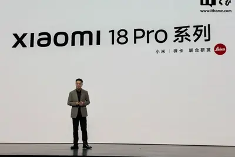